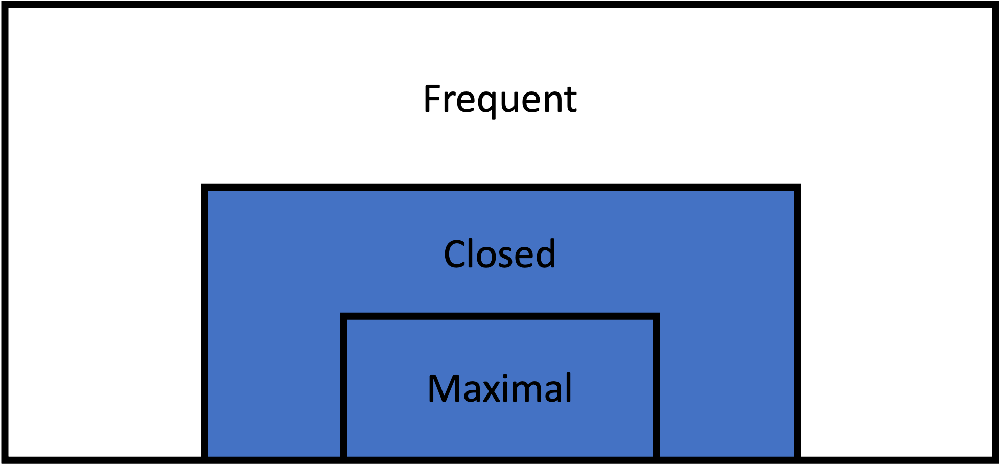

Closed Itemset Mining

Description
Closed itemset mining is a set of techniques focused on discovering closed itemsets in a transactional dataset. A closed itemset is one which appears frequently in the data (above the minimum support threshold) and which has no superset with the same support. In other words, closed itemsets are the largest possible combinations of items that share the same transactions. They represent a lossless compression of the set of all frequent itemsets, as the support of any frequent itemset can be derived from the closed itemsets.
The key advantage of mining closed itemsets is that it provides a compact yet complete representation of all frequent patterns in the data. By identifying only the closed frequent itemsets, the number of patterns generated is significantly reduced compared to mining all frequent itemsets while still retaining all support information. This approach strikes a balance between the compactness of maximal itemsets and the completeness of all frequent itemsets. Closed itemset mining is particularly useful in scenarios where both the frequency and the exact composition of itemsets are important, but compression of the results is desired.
Formal Definition
Let:
- $I$ be the set of all items in the dataset
- $X$ be an itemset, where $X \subseteq I$
- $D$ be the set of all transactions in the dataset
- $\sigma(X)$ be the support of itemset $X$ in $D$
- $\sigma_{min}$ be the minimum support threshold
Then, an itemset $X$ is a closed frequent itemset if and only if:
- The support of $X$ is greater than or equal to the minimum support threshold:
\[\sigma(X) \geq \sigma_{min}\]
- There does not exist a proper superset $Y$ of $X$ with the same support:
\[\nexists Y \supset X : \sigma(Y) = \sigma(X)\]
Thus, $CFI$, the set of all closed frequent itemsets in $I$, can be expressed as:
\[CFI = {X \mid X \subseteq I \wedge \sigma(X) \geq \sigma_{min} \wedge \nexists Y \supset X : \sigma(Y) = \sigma(X)}\]
Frequent Itemset Recovery
Closed itemsets can be used to recover all frequent itemsets by generating combinations from the mined itemsets along with their supports. This can be accomplished thorugh the levelwise algorithm proposed by Pasquier et al. in 1999.
The levelwise function implements the levelwise algorithm for recovering frequent itemsets from closed itemsets. This algorithm generates all subsets of the closed itemsets, derives their supports, and then returns the results. This particular implementation is designed to take an output DataFrame from the various closed itemset mining algorithms in this package. Without the original transactions dataset, its input and return values can only handle absolute support (N), rather than both relative support and absolute support.
RuleMiner.levelwise — Methodlevelwise(df::DataFrame, min_n::Int)::DataFrameRecover frequent itemsets from a DataFrame of closed itemsets
Arguments
df::DataFrame: A DataFrame containing the maximal frequent itemsets, with columns:Itemset: The items in the maximal frequent itemset.Support: The relative support of the itemset as a proportion of total transactions.N: The absolute support count of the itemset.Length: The number of items in the itemset.
min_support::Int: The minimum support threshold for the rules. This algorithm only takes absolute (integer) support
Returns
DataFrame: A DataFrame containing the maximal frequent itemsets, with columns:Itemset: The items in the maximal frequent itemset.N: The absolute support count of the itemset.Length: The number of items in the itemset.
Description
Example
txns = load_transactions("transactions.txt", ' ')
# Find closed frequent itemsets with minimum 5,000 transactions
closed_sets = LCM(txns, 5_000)
# Recover frequent itemsets from the closed itemsets
frequent_sets = levelwise(closed_sets, 5_000)References
Pasquier, Nicolas, Yves Bastide, Rafik Taouil, and Lotfi Lakhal. “Efficient Mining of Association Rules Using Closed Itemset Lattices.” Information Systems 24, no. 1 (March 1, 1999): 25–46. https://doi.org/10.1016/S0306-4379(99)00003-4.
Algorithms
CHARM
The charm function implements the CHARM ([C]losed, [H]ash-based [A]ssociation [R]ule [M]ining) algorithm for mining closed itemsets proposed by Mohammad Zaki and Ching-Jui Hsiao in 2002. This algorithm uses a depth-first search with hash-based pruning approaches for non-closed itemsets and is particularly efficient for sparse datasets.
RuleMiner.charm — Methodcharm(txns::Transactions, min_support::Union{Int,Float64})::DataFrameIdentify closed frequent itemsets in a transactional dataset with the CHARM algorithm.
Arguments
txns::Transactions: ATransactionsobject containing the dataset to mine.min_support::Union{Int,Float64}: The minimum support threshold. If anInt, it represents the absolute support. If aFloat64, it represents relative support.
Returns
DataFrame: A DataFrame containing the maximal frequent itemsets, with columns:Itemset: The items in the maximal frequent itemset.Support: The relative support of the itemset as a proportion of total transactions.N: The absolute support count of the itemset.Length: The number of items in the itemset.
Description
CHARM is an algorithm that builds on the ECLAT algorithm but adds additional closed-ness checking to return only closed itemsets. It uses a depth-first approach, exploring the search space and checking found itemsets against previously discovered itemsets to determine closedness.
Example
txns = load_transactions("transactions.txt", ' ')
# Find closed frequent itemsets with 5% minimum support
result = charm(txns, 0.05)
# Find closed frequent itemsets with minimum 5,000 transactions
result = charm(txns, 5_000)References
Zaki, Mohammed, and Ching-Jui Hsiao. “CHARM: An Efficient Algorithm for Closed Itemset Mining.” In Proceedings of the 2002 SIAM International Conference on Data Mining (SDM), 457–73. Proceedings. Society for Industrial and Applied Mathematics, 2002. https://doi.org/10.1137/1.9781611972726.27.
FPClose
The fpclose function implements the FPClose ([F]requent [P]attern Close) algorithm for mining closed itemsets. This algorithm, proposed by Gösta Grahne and Jianfei Zhu in 2005, builds on the FP-Growth alogrithm to discover closed itemsets in a dataset without candidate generation. It inherits many of the advantages of FP-Growth when it comes to dense datasets.
RuleMiner.fpclose — Methodfpclose(txns::Transactions, min_support::Union{Int,Float64})::DataFrameIdentify closed frequent itemsets in a transactional dataset with the FPClose algorithm.
Arguments
txns::Transactions: ATransactionsobject containing the dataset to mine.min_support::Union{Int,Float64}: The minimum support threshold. If anInt, it represents the absolute support. If aFloat64, it represents relative support.
Returns
DataFrame: A DataFrame containing the maximal frequent itemsets, with columns:Itemset: The items in the maximal frequent itemset.Support: The relative support of the itemset as a proportion of total transactions.N: The absolute support count of the itemset.Length: The number of items in the itemset.
Description
The FPClose algorithm is an extension of FP-Growth with additional pruning techniques to focus on mining closed itemsets. The algorithm operates in two main phases:
FP-tree Construction: Builds a compact representation of the dataset, organizing items by their frequency to allow efficient mining.
Recursive Tree Traversal:
- Processes itemsets from least frequent to most frequent.
- For each item, creates a conditional FP-tree and recursively mines it.
- Uses a depth-first search strategy, exploring longer itemsets before shorter ones.
- Employs pruning techniques to avoid generating non-closed itemsets.
FPClose is particularly efficient for datasets with long transactions or sparse frequent itemsets, as it can significantly reduce the number of generated itemsets compared to algorithms that find all frequent itemsets.
Example
txns = load_transactions("transactions.txt", ' ')
# Find closed frequent itemsets with 5% minimum support
result = fpclose(txns, 0.05)
# Find closed frequent itemsets with minimum 5,000 transactions
result = fpclose(txns, 5_000)References
Grahne, Gösta, and Jianfei Zhu. “Fast Algorithms for Frequent Itemset Mining Using FP-Trees.” IEEE Transactions on Knowledge and Data Engineering 17, no. 10 (October 2005): 1347–62. https://doi.org/10.1109/TKDE.2005.166.
LCM
The LCM function implements the LCM ([L]inear-time [C]losed [M]iner) algorithm for mining frequent closed itemsets first proposed by Uno et al. in 2004. This is an efficient method for discovering closed itemsets in a dataset with a linear time complexity. It is typically faster than other algorithms and has a more balance profile that achieves fast mining on both sparse and dense datasets.
RuleMiner.LCM — MethodLCM(txns::Transactions, min_support::Union{Int,Float64})::DataFrameIdentify closed frequent itemsets in a transactional dataset with the LCM algorithm.
Arguments
txns::Transactions: ATransactionsobject containing the dataset to mine.min_support::Union{Int,Float64}: The minimum support threshold. If anInt, it represents the absolute support. If aFloat64, it represents relative support.
Returns
DataFrame: A DataFrame containing the maximal frequent itemsets, with columns:Itemset: The items in the maximal frequent itemset.Support: The relative support of the itemset as a proportion of total transactions.N: The absolute support count of the itemset.Length: The number of items in the itemset.
Description
LCM is an algorithm that uses a depth-first search pattern with closed-ness checking to return only closed itemsets. It utilizes two key pruning techniques to avoid redundant mining: prefix-preserving closure extension (PPCE) and progressive database reduction (PDR).
- PPCE ensures that each branch will never overlap in the itemsets they explore by enforcing the order of the itemsets. This reduces redunant search space.
- PDR works with PPCE to remove data from a branch's dataset once it is determined to be not nescessary.
Example
txns = load_transactions("transactions.txt", ' ')
# Find closed frequent itemsets with 5% minimum support
result = LCM(txns, 0.05)
# Find closed frequent itemsets with minimum 5,000 transactions
result = LCM(txns, 5_000)References
Uno, Takeaki, Tatsuya Asai, Yuzo Uchida, and Hiroki Arimura. “An Efficient Algorithm for Enumerating Closed Patterns in Transaction Databases.” In Discovery Science, edited by Einoshin Suzuki and Setsuo Arikawa, 16–31. Berlin, Heidelberg: Springer, 2004. https://doi.org/10.1007/978-3-540-30214-8_2.
CARPENTER
The carpenter function implements the CARPENTER ([C]losed [P]att[e]r[n] Discovery by [T]ransposing Tabl[e]s that a[r]e Extremely Long) algorithm for mining closed itemsets proposed by Pan et al. in 2003. This algorithm uses a transposed structure to optimize for datasets that have far more items than transactions, such as those found in genetic research and bioinformatics. It is not well suited to datasets in the more standard transaction-major format.
RuleMiner.carpenter — Methodcarpenter(txns::Transactions, min_support::Union{Int,Float64})::DataFrameIdentify closed frequent itemsets in a transactional dataset with the CARPENTER algorithm.
Arguments
txns::Transactions: ATransactionsobject containing the dataset to mine.min_support::Union{Int,Float64}: The minimum support threshold. If anInt, it represents the absolute support. If aFloat64, it represents relative support.
Returns
DataFrame: A DataFrame containing the maximal frequent itemsets, with columns:Itemset: The items in the maximal frequent itemset.Support: The relative support of the itemset as a proportion of total transactions.N: The absolute support count of the itemset.Length: The number of items in the itemset.
Description
CARPENTER is an algorithm that progressively builds larger itemsets, checking closed-ness at each step with three key pruning strategies:
- Itemsets are skipped if they have already been marked as closed on another branch
- Itemsets are skipped if they do not meet minimum support
- Itemsets' child itemsets are skipped if they change the support when the new items are added
CARPENTER is specialized for datasets which have few transactions, but many items per transaction and may not be the best choice for other data.
Example
txns = load_transactions("transactions.txt", ' ')
# Find closed frequent itemsets with 5% minimum support
result = carpenter(txns, 0.05)
# Find closed frequent itemsets with minimum 5,000 transactions
result = carpenter(txns, 5_000)References
Pan, Feng, Gao Cong, Anthony K. H. Tung, Jiong Yang, and Mohammed J. Zaki. “Carpenter: Finding Closed Patterns in Long Biological Datasets.” In Proceedings of the Ninth ACM SIGKDD International Conference on Knowledge Discovery and Data Mining, 637–42. KDD ’03. New York, NY, USA: Association for Computing Machinery, 2003. https://doi.org/10.1145/956750.956832.